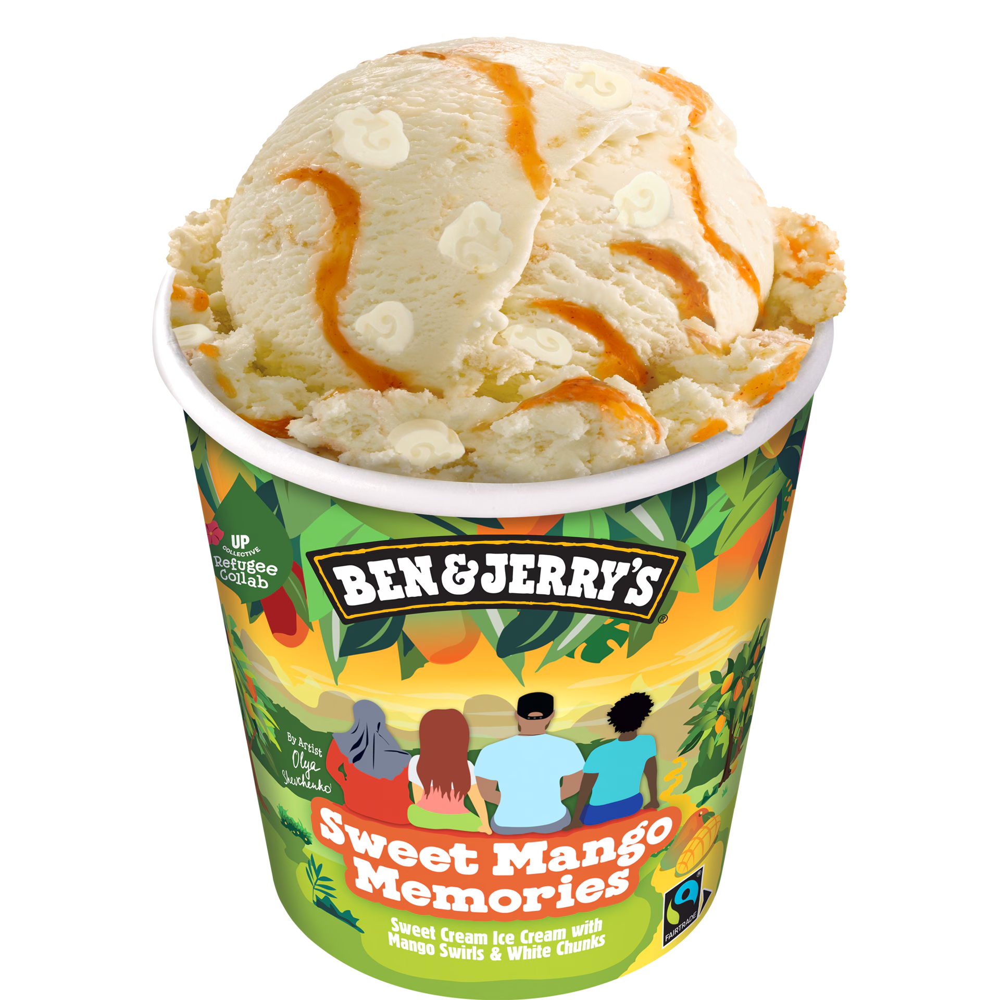
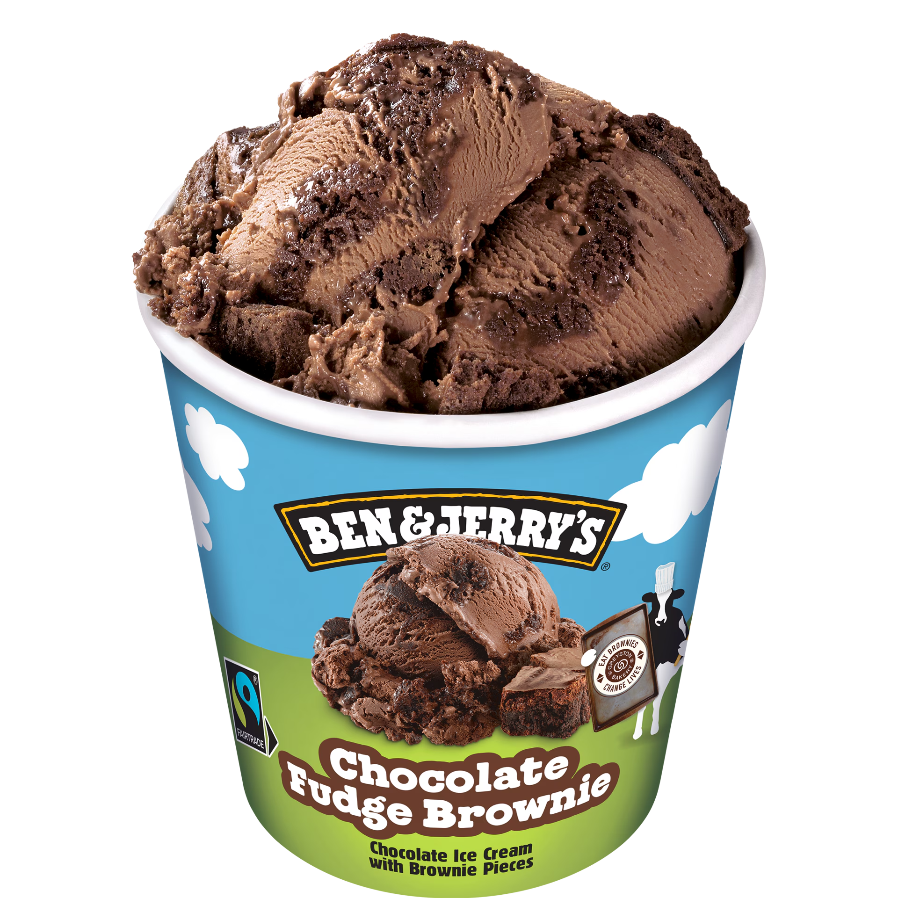
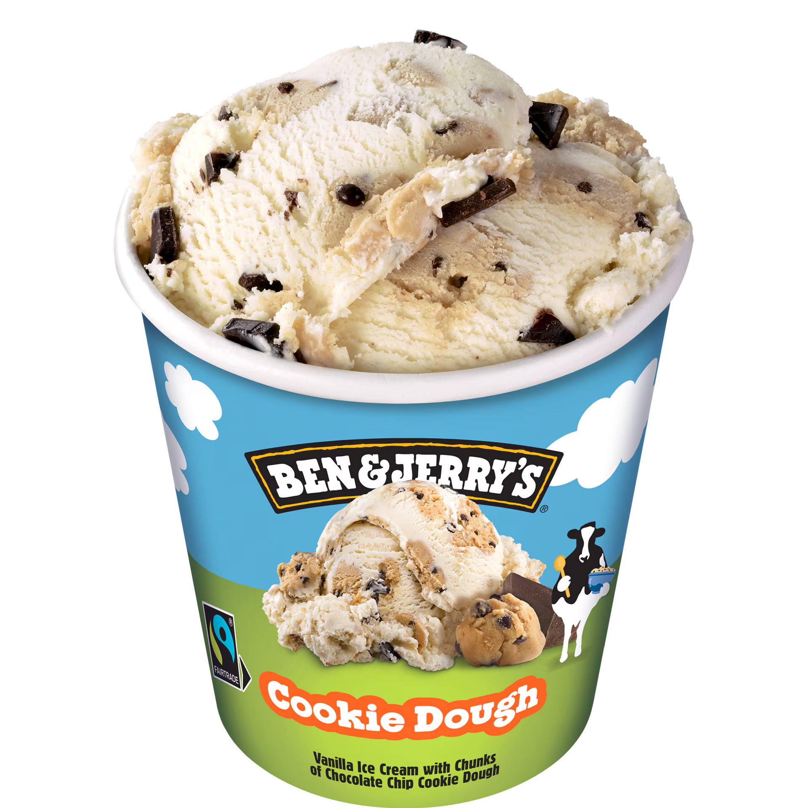

Chunky Monkey
Bananenroomijs met stukken walnoten en choco-banaantjes
VerkooppuntenOver deze smaak
Om een smaak te creëren die net zo leuk is als de naam, hebben we geëxperimenteerd totdat we zeker wisten dat we een winnaar hadden: de nootachtigste choco-kan-ik-niet-genoeg-van-krijgen-creatie ooit.
Verkrijgbaar als:


Waardevolle aankoop

Fairtrade

Verantwoordelijke verpakking

Plant based tub & lid

Caring Dairy with Free Grazing
Voedingscertificeringen

Veganistisch
Ingrediënten
ROOM (25%), suiker, water, gecondenseerde magere MELK, WALNOTEN (5%), bananenpuree (4,5%), glucose-fructosestroop, EIGEEL¹, kokosolie, magere cacaopoeder, citroensap op basis van geconcentreerd sap, stabilisatoren (guargom, carrageen), emulgator (SOJALECITHINE), MELKVET, natuurlijk aroma, natuurlijk vanille-aroma. Kan andere noten en pinda’s bevatten. Suiker, banaan, cacao, vanille: onder Fairtrade voorwaarden ingekocht volgens het mass balance principe, totaal 25%F. ¹Van vrije uitloopeieren. Past in een vegetarisch dieet. Bezoek info.fairtrade.net/sourcing

Ontdek hoe het gemaakt wordt
Learn how we make ice creamRecyclen
Van het mixen van Fairtrade chunks & swirls tot het gebruiken van weidemelk. Het is een vreugdevolle reis naar een ijstastische wereld! Elke pint verdient een zoet einde… gooi jouw lege pint dus in de prullenbak. Dankjewel van ons allemaal bij Ben & Jerry’s!
Aanbevolen smaken
-

Onze klassiekers
Sweet Mango Memories
Meer lezen -

Onze klassiekers
Chocolate Fudge Brownie
Meer lezen -

Onze klassiekers
De Choco Cookie Dough
Meer lezen